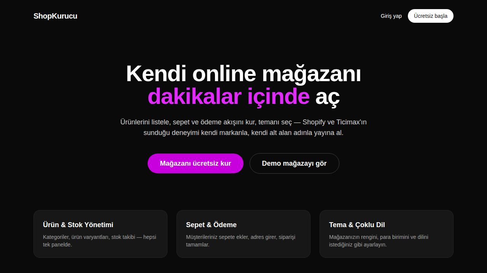
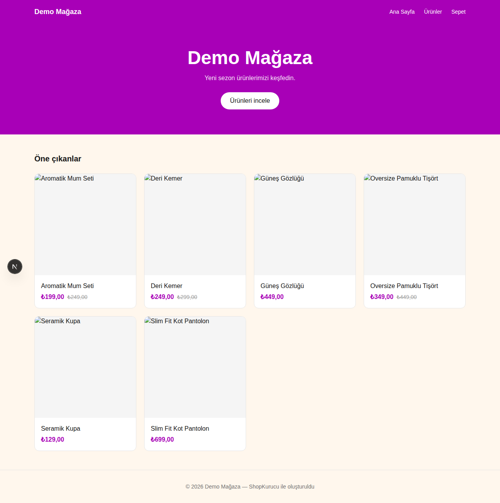
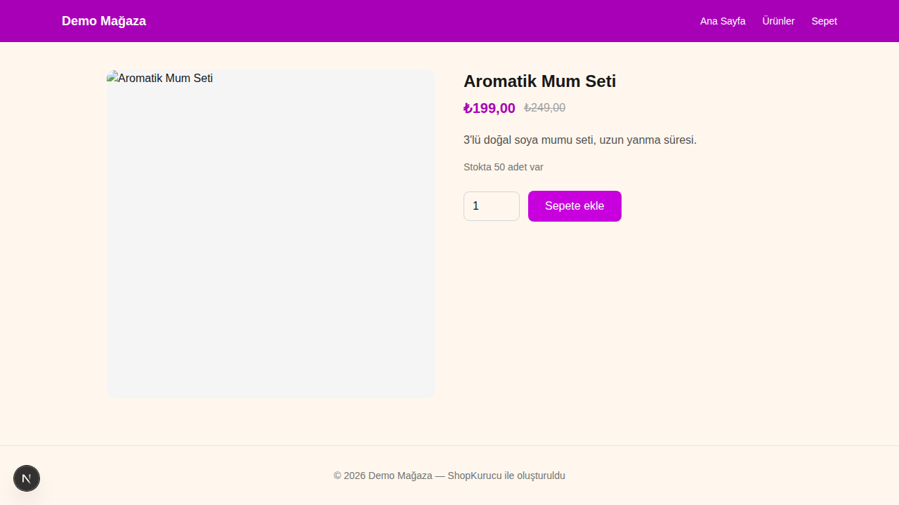
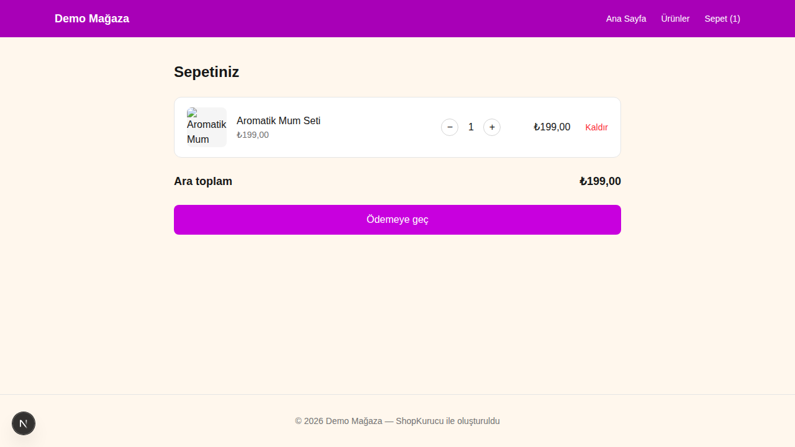
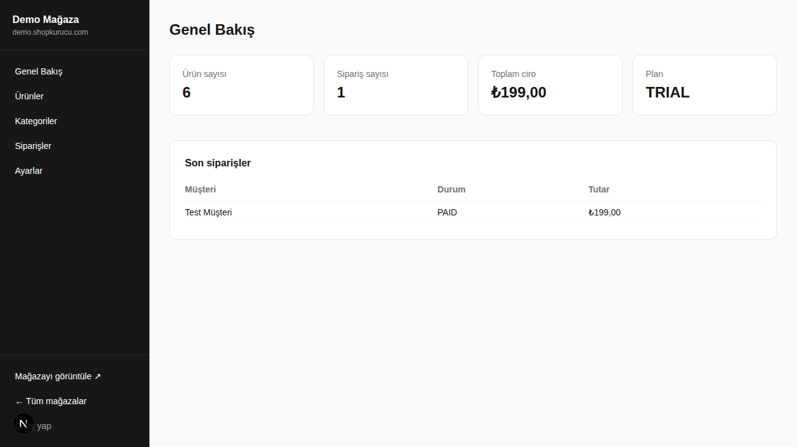
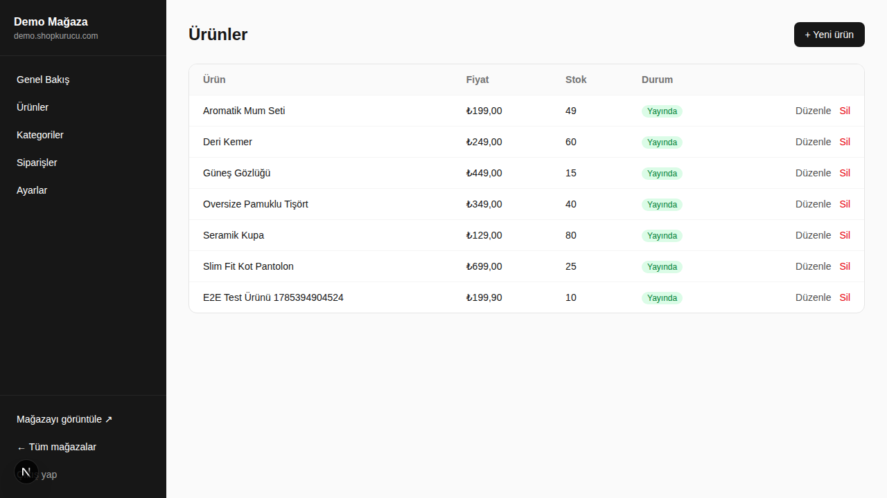
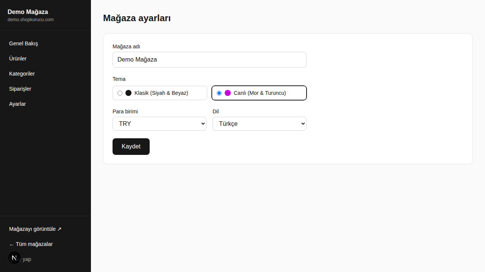

Kullanıcıların kayıt olup kendi online mağazasını açabildiği, çok kiracılı (multi-tenant) bir e-ticaret SaaS platformunun açık kaynak v1 temeli. Next.js 16, Drizzle ORM ve Tailwind CSS ile geliştirildi.
Tek bir kod tabanında birden fazla mağazayı barındıran, uçtan uca test edilmiş bir platform.
Her mağaza kendi alt alan adı, teması, para birimi ve diliyle izole çalışır. Paylaşımlı şema + storeId yaklaşımı.
Mağaza sahibi paneli üzerinden ürün, kategori, stok ve sipariş yönetimi.
Misafir sepeti, adres formu, sipariş oluşturma — simüle edilmiş ödeme akışı ile uçtan uca çalışır.
Genişletilebilir tema kaydı — mağaza sahibi ayarlardan temasını, para birimini ve dilini seçer.
JWT tabanlı, bağımlılığı az bir auth katmanı — mağaza sahipleri ve müşteriler için ayrı oturumlar.
Playwright ile ürün gezme → sepet → checkout → admin akışlarının tamamı otomatik doğrulanıyor.
Gerçek çalışan uygulamadan alınmış ekran görüntüleri (demo mağaza verisiyle).







Kurulum gerektirmeyen, hafif ve genişletilebilir bir yığın.
git clone <repo-url>
cd ecom-platform
npm install
npm run db:push # SQLite şemasını oluşturur
npm run db:seed # demo mağaza + ürünler ekler
npm run dev # http://localhost:3000
Demo giriş: demo@shopkurucu.com / demo1234 —
demo mağaza: /store/demo
Bu depo, sağlam bir v1 temeli. Üretim seviyesine taşımak için önerilen sıradaki adımlar:
Not: Shopify/Ticimax seviyesinde tam kapsamlı bir platform yıllar süren bir mühendislik çalışmasıdır. Bu proje; mimari, veri modeli ve temel akışların (mağaza oluşturma, ürün yönetimi, storefront, sepet/checkout, tema, çoklu dil/para birimi altyapısı) sağlam, genişletilebilir bir v1'idir.